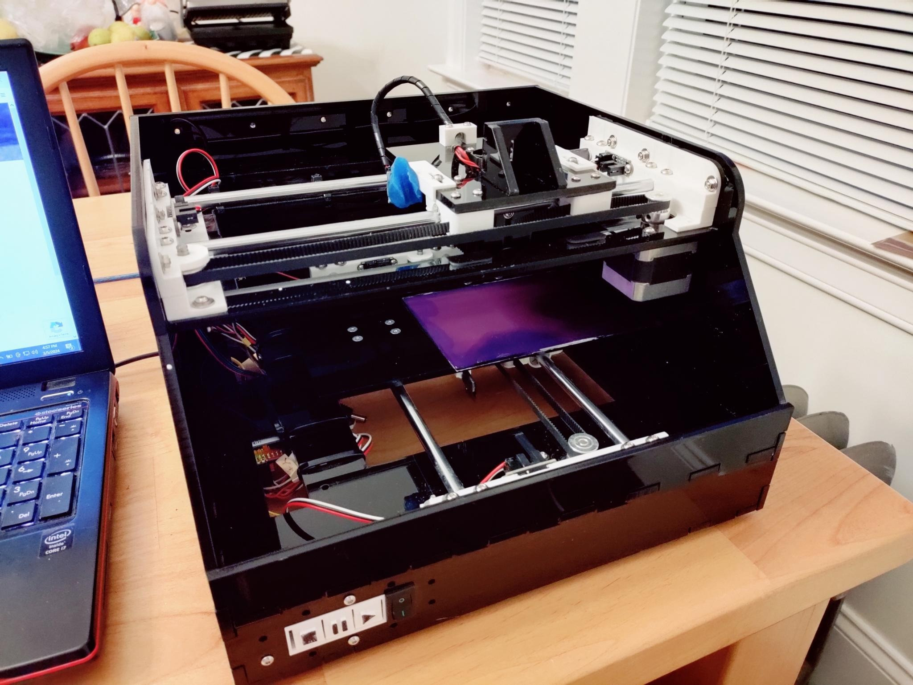
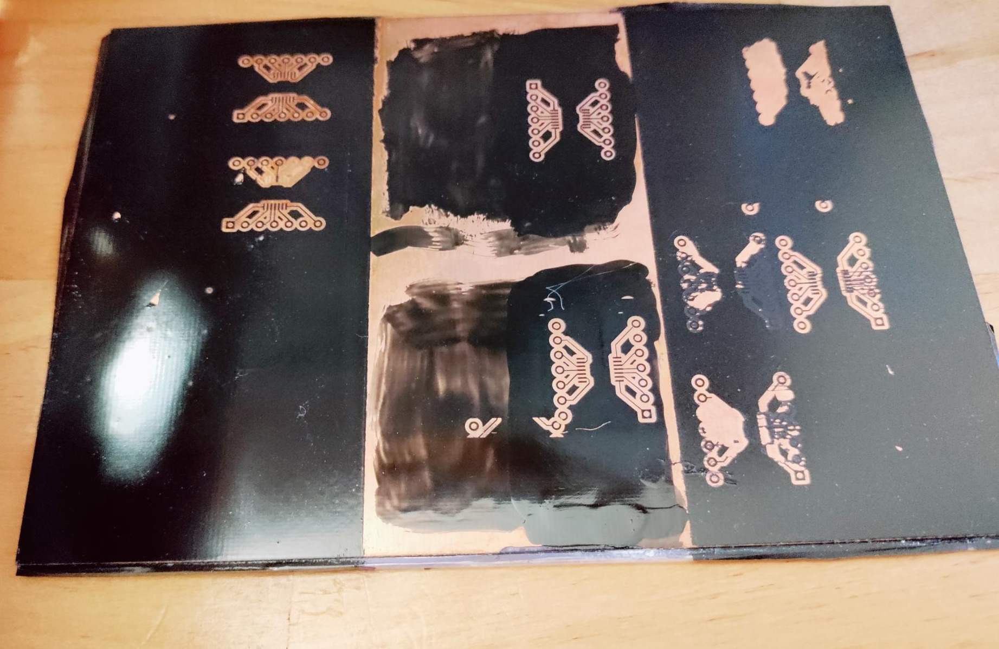

PCB Laser Exposer
 Background:This was a personal project focused on developing faster capabilities to prototype simple PCBs in-house, saving time and expenses compared to sending designs to a PCB fab.
Phase 1: IdeationThe initial idea was conceived when thinking of ways to simplify and accelerate traditional home lithography, where a chemically-resistant image of the traces of a PCB design is applied to a copper-clad board, the unprotected copper is etched away in a chemical bath, and the resist is subsequently removed prior to use. The most common process involves laser printing an image of a PCB circuit, then transferring it to a copper-clad board using heat or solvents, where it serves as the resist in the etching bath. Transferring toner is often a tricky process, particularly when working with fine traces or details on a PCB board. An alternative method is to print an inverted image of the circuit on a transparent sheet, lay it on a copper clad board that has been coated in a UV-Sensitive material, and expose it under UV light, before developing it and removing the unexposed material to produce a resist. This has it’s own challenges and drawbacks, however: if the transparency is not flat against the sensitized PCB, then the exposure can produce inconsistent effects.
To address these constraints I came up with the idea of using a laser to pass back and forth across the photosensitized sheet. Searching, I found that similar projects had been created, one using a simple xy gantry system, and another using a polygonal mirror to rapidly scan a laser over the surface to be exposed. For simplicity I decided to base my design off the xy gantry system; while slower than a scanning system, the labor savings and potential increase in precision were the primary goals. In addition, I hoped to be able to use the system for engravings, and so decided to use a more powerful laser.
Phase 2: PlanningTo begin I developed a CAD design of the structure to used ¼” acrylic sheets, and modelled all necessary hardware components to be 3D printed. I also ordered a 5.5W 405nm laser; while not wholly UV, 405nm is sufficiently close to the UV spectrum to expose most UV-sensitized film, and has the safety advantage of being visible. Similar to the project I based the design off, I selected Igus Drylin linear guides to minimize wobble, and planned to move the base plate and tool assembly using stepper motors and toothed belts. To simplify the design, I ordered a commercial off-the-shelf (COTS) CNC shield for an Arduino Uno for controlling and driving the steppers and laser.
For ease of use, I designed a small 3D printed button assembly which actuated perfboard-mounted momentary switches behind it. I also planned a switch controlling power to the motors and laser to minimize risk of accidents during use. Finally, to minimize external cabling, I decided to add wifi capabilities.
Phase 3: DevelopmentI constructed the plexiglass case by cutting acrylic panels at the local Arch Reactor makerspace (link), and 3D printing the other components. Ultimately I found that the laser had been misaligned, and as a result the panels had been cut at a skew; I addressed this by redesigning the upper gantry mount to enable lateral adjustment, allowing the upper and lower gantries to be tuned to be perpendicular. Mounting holes for 3D printed components also had to be adjusted.
Once constructed, I added the electronics, including the limit sensors, stepper motors, control panel, and the various drivers underneath the main body. I also added a small ESP-01 board which I interfaced to the GRBL software for wifi capabilities. To control the system I used the open-source software LaserGRBL, which is optimized for interfacing with the GRBL CNC control software for laser engraving.
Phase 4: Testing and IterationIn order to expose a design, I first designed a circuit and laid out a PCB in the open-source PCB design software KiCAD. I then exported the PCB traces as an svg, and imported them into LaserGRBL for exposure of the PCB. During testing the initial design proved to be sufficient for exposing both simple and detailed designs. A section of sensitized board, and a board that had been developed and etched are pictured below.
However, inconsistent bonding of the UV-sensitive film to the copper-clad boards was found to be a frequent stumbling block in the process. Presensitized boards are available and would bypass the problem, but they tend to be quite expensive, making them impractical compared to a PCB Fab for all but the most urgent of projects. As an alternative, I explored using paint as a photoresist, and ablating off regions to be etched using the laser. I was able to achieve some success trying a range of different coatings and application processes, however even after adding air assist paint residue could prevent proper etching of boards, but more stringent cleaning methods often eroded sections of the resist. While viable, ultimately this approach was best suited to small boards, where a small failure could be readily redone without a great loss of time.
 Phase 5: Operation and Future PlansWhile I was able replicate the viability of both the UV-sensitive film resist and establish the viability of the pain resist, ultimately I found the process using the film to be comparably labor intensive to other forms of PCB manufacture. Furthermore, the poor economics of pre-sensitized boards made that an unappealing option for most circumstances. While I continue to use the system for engraving small items, I have moved on to repairing a small CNC mill with the intention of using it for PCB prototyping.